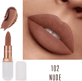
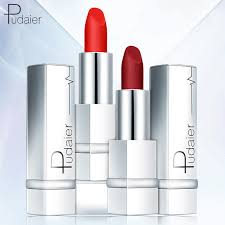
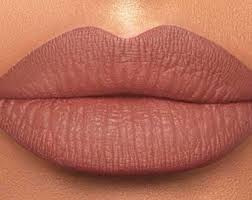
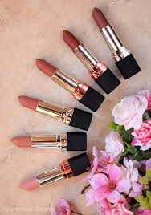
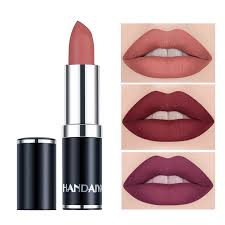
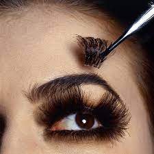
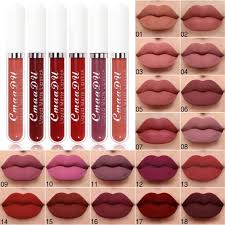
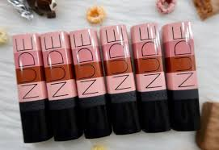
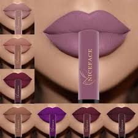
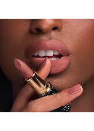

Nude Matte lips
         Nude lipstick and mate is the best when it comes to women with dark skin toned or chocolate.its not that bright but goegues It goes with any type of clothes.Matte last longer 24hours and its not sticky or greasy . the kids of lipsticks you should always carry in your bag whenever cassual or formal
| Number of items | coverage | Color | form | Barcode |
|---|---|---|---|---|
| 57in stock | Dark cover | SPF108 | sticky and Matte | 000348720852 |